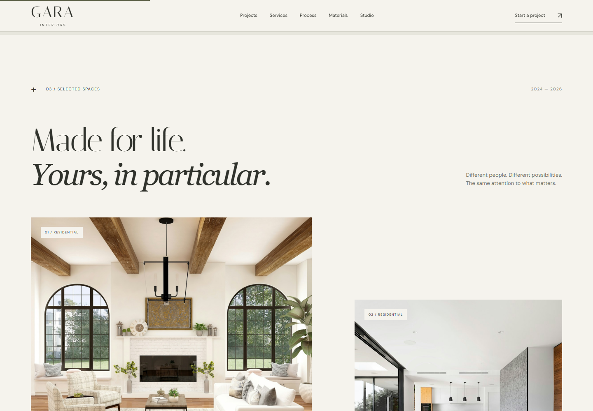
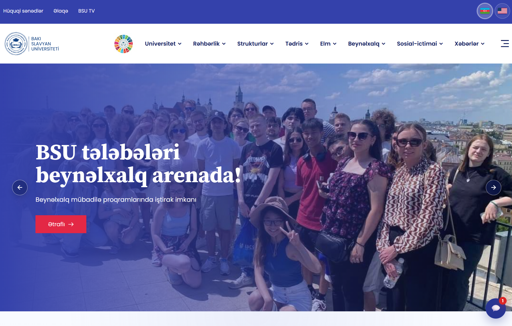
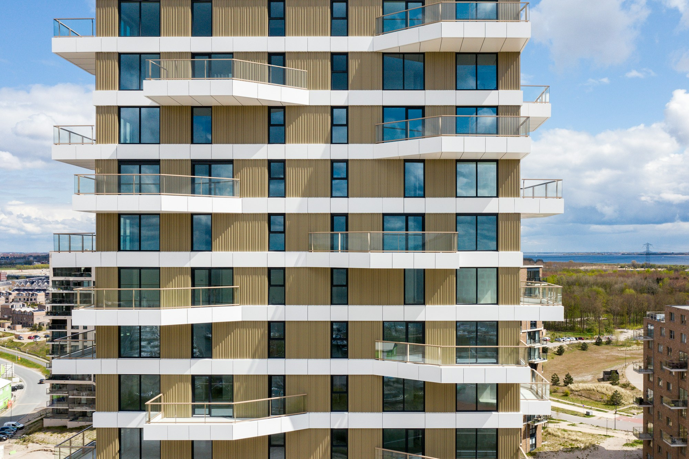
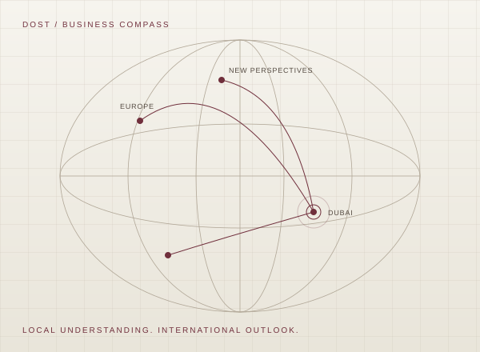

G-Walt CARS
Services → Enquiry → Booking
A premium automotive service experience designed around discovery, visual impact and structured booking.
Explore live experience A considered path from first impression to booked service.
A considered path from first impression to booked service.
GARA TECH · SOFTWARE SOLUTIONS
From public-facing websites to booking flows, client portals, institutional platforms and interactive sales experiences — each solution begins with the business problem.
A visual route from first impression to a booked service.
Open chapterA clinic needs trust and an appointment flow. A residential developer needs property discovery. A photographer needs portfolio and client delivery. A consultant needs clarity and qualification. A university needs structured institutional information.
The technology changes because the business problem changes.
Choose a chapter or follow the full showroom.
Services → Enquiry → Booking
A premium automotive service experience designed around discovery, visual impact and structured booking.
Explore live experience
A considered path from first impression to booked service.
Portfolio → Qualified project brief → Quote

Portfolio → Inquiry → Client gallery
An editorial photography experience connecting discovery, enquiries and private client delivery.
Explore live experienceInstitutional information → Services → Digital platform
A real university platform built around institutional content, reusable modules, integrations and ongoing digital operations.
Visit live university platform
LIVE PLATFORM
Need → Doctor → Service → Appointment
A patient-centered healthcare experience designed around clarity, specialist discovery and appointment flow.
Explore live experienceBuilding → Floor → Residence → Plan → Viewing

Building explorerFloor 08 · 2 availableView apartment plan →
Business diagnosis → Strategy → Market → Growth
A unified advisory experience designed to organize complex business decisions into one strategic journey.
Explore live experienceAcross seven industries, the work stays focused on the experience a business needs to deliver.
The website is useful when it supports something the business actually needs: trust, discovery, sales, booking, qualification, service delivery or operations. Gara Tech starts with that need.
GARA TECH
Start with the problem. We can decide what the right solution actually is.